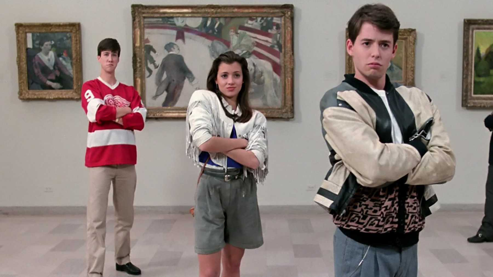

Ferris Bueller's Day Off is one of the staple movies of the 1980s. Made in 1986, this iconic film is directed by John Hughes and stars Matthew Broderick , Mia Sara , and Alan Ruck . The movie follows Ferris Bueller, a high school student, and his two friends as they try to pull off skipping school for a day in the city of Chicago and his principle and sister going through crazy situations to simultaneously try and catch him. With the unique breaking of the fourth wall that Ferris does to express his inner thoughts, the film has been deemed one of the most famous teen movies of all time.
This is my favorite movie because, being from Chicago, I think this film displays the city in an amazing and upbeat way. John Hughes is known for having Chicago as the setting for many of his movies. For this movie in particular, Hughes mission was to capture the architecture, landscape, but most importantly the spirit of the city. The Sears Tower, the Art Institute (pictured below), and Wrigley Field are just a few of the famous Chicago landmarks that the characters visit.
Ferris, Sloane, and Cameron in their famous Art Institute scene